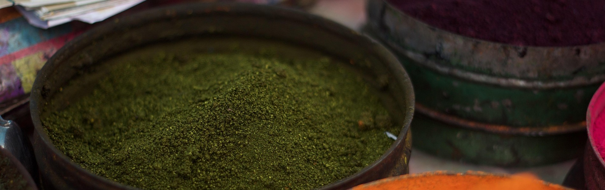

Malachite
The Mountain's Green Heart
Origin
Malachite is a basic copper carbonate mineral [CuCO₃·Cu(OH)₂] found in copper deposits worldwide. Major historical sources included:
- Russia (Ural Mountains) — particularly the Nizhne-Tagilsk deposit
- Cyprus — a major source in antiquity
- Spain and Macedonia — noted by Pliny
- Armenia — producing "armenium," considered the most precious variety
- France (Chessy) — a notable European deposit
- China (Hubei Province) — significant for Chinese painting
- United States (Bisbee, Arizona) — later mining
Why These Regions?
Malachite forms as a secondary mineral when copper ores weather and react with carbonated water. It's found in the oxidation zones of copper deposits, often alongside azurite (blue copper carbonate). The two minerals are "connatural counterparts"—where copper weathers, both can appear.
History
Malachite has been used as a pigment and gemstone since before 3000 BCE. In ancient Egypt, it was one of the earliest green pigments, used in tomb paintings and cosmetics (Hurtaud, 2018). Pliny the Elder called it “chrysocolla” and listed it among the "florid" pigments—rare and expensive materials. Roman artists used malachite in wall paintings, and it has been identified in pigment pots from Pompeii.
In medieval Europe, malachite was used sparingly in tempera paintings before the 16th century. Its coarser particles created a different texture than other greens, and it was sensitive to acids and sulfur fumes—limitations that restricted its use. In China, malachite was a staple of traditional painting, particularly for landscape elements. The 16th-century painter Qiu Ying used it alongside azurite to create depth and communicate meaning—the high cost of these minerals made their placement in a composition a deliberate artistic choice.
How Was It Made?
Malachite pigment production was straightforward but required care:
- Careful selection of pure mineral specimens.
- Grinding — coarsely ground malachite gives a dark green; finely ground particles give a lighter, more transparent tone.
- Washing and levigation — separating particles by size in water.
The pigment is lightfast but decomposes in acids with carbon dioxide bubbles, and turns black with warm alkalis or sulfur fumes. A synthetic version, green verditer, was made by coloring chalk with copper sulfate. It produced a paler color with regularly sized, rounded particles—distinguishable from natural malachite under magnification.
What Makes It Dangerous?
Malachite is moderately toxic. The copper content is the primary concern. Copper compounds can cause:
- Skin irritation and allergic reactions
- Respiratory irritation from inhalation
- Chronic exposure may cause anemia
The pigment is insoluble in water and ethanol, which limits absorption through the skin. The main risk is inhalation of dust during grinding. Historical pigment makers likely suffered respiratory issues from prolonged exposure.
Artists Who Used Malachite
-
- Fra Filippo Lippi and Sandro Botticelli
- They used malachite in their Adoration paintings of the 1450s–1470s. These Florentine artists shifted backgrounds from glittering gold to vivid green—malachite was among the pigments that made this possible. Lippi's mystical green forests for the Medici family and Botticelli's verdant meadows marked the beginning of naturalism in Florentine painting.
-
- Qiu Ying (ca. 1498–1552)
- A Chinese colorist, used malachite in landscape and figure paintings. A dissertation on his work argues that he used color as a communicative tool, reserving prized pigments like malachite for motifs important to his patrons.
Famous Works Featuring Malachite
-
- Adoration of the Child — Fra Filippo Lippi (1450s–1460s)
-
- Piacenza Tondo — Sandro Botticelli
-
- Landscape paintings — Qiu Ying (16th century)
-
- Pompeian wall paintings — Roman artists (before 79 CE)